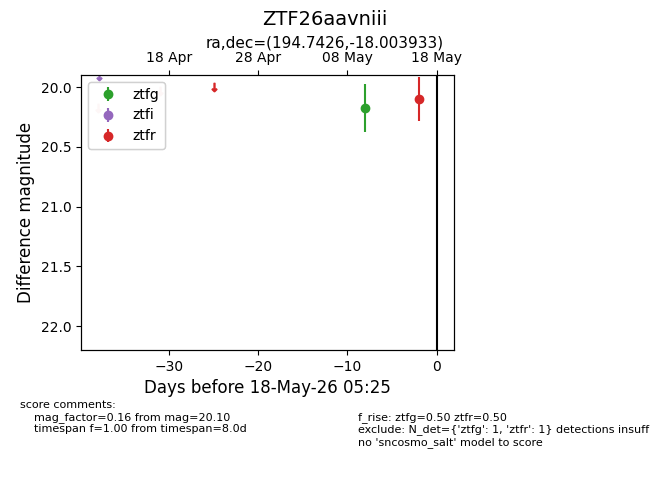
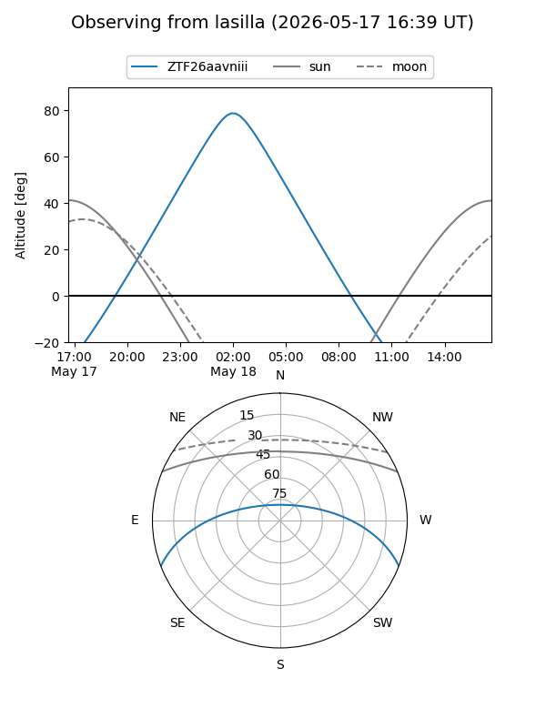
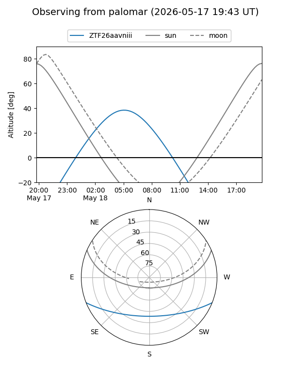

ZTF26aavniii
Target ZTF26aavniii at 2026-05-18 05:26
Aliases and brokers:
FINK: link
Lasair: link
ALeRCE: link
alt names
ZTF26aavniii (ztf,fink_ztf)
Coordinates:
equatorial (ra, dec) = 194.7426,-18.00393
equatorial (HMS+DMS) = 12:58:58.24,-18:00:14.16
galactic (l, b) = (305.4576,+44.83087)
Flags:
Photometry:
last ztfg=20.18, ztfr=20.10
1 ztfg, 1 ztfr detections
Lightcurve

Visibility


Additional plots